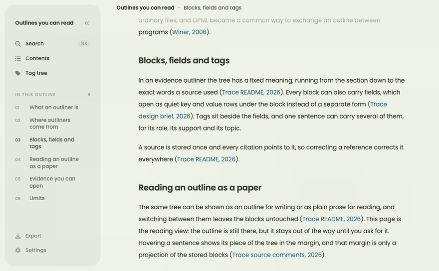

A sample that uses every part
A short document with connected highlights, maths, links, a comment, a definition and an interactive figure. Its guide explains each part, and shows the zip’s layout.
Evidence-first documents
TraceCite is a format and a reader. Click a sentence and the source’s exact words open in place (Author, 2026), with the passage they sit in, notes, tags and who checked them.

Each is one HTML file with its document inside. Open one, click any sentence, pin a tag in the margin.
A short document with connected highlights, maths, links, a comment, a definition and an interactive figure. Its guide explains each part, and shows the zip’s layout.
A short essay on outliners: how a tree of blocks becomes a paper whose claims open into their evidence.
A history of document structure, from the scroll to markup, with figures, tables, comments and checked quotes.
trace-reader.html is a single file. Download it, open it in a browser, and drop a .trace.zip on it. It does all the work itself: sources, maths, cross-references, citation styles, interactives. Nothing to install, nothing uploaded.
.trace.json: sections, paragraphs, sentences, citations. See the format..bib file with trace-* fields for each exact quote and the passage around it: BibTrace..json and its .bib on the reader, then Export a .trace.zip to share. Or build a page with node scripts/build-reading.mjs.